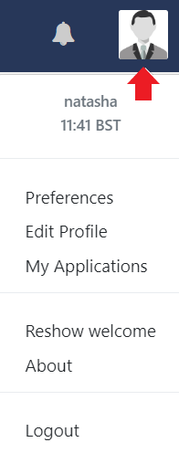
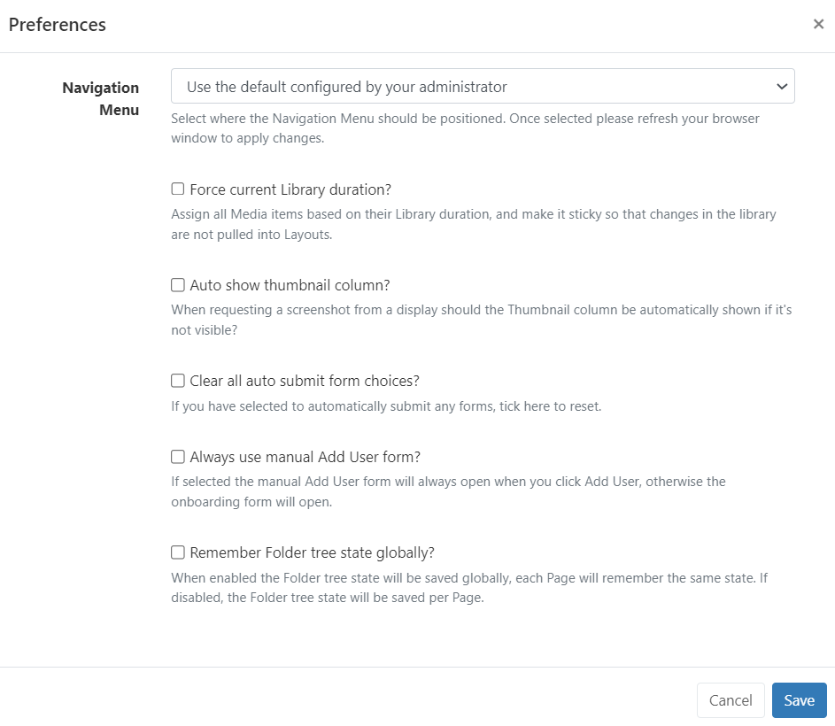
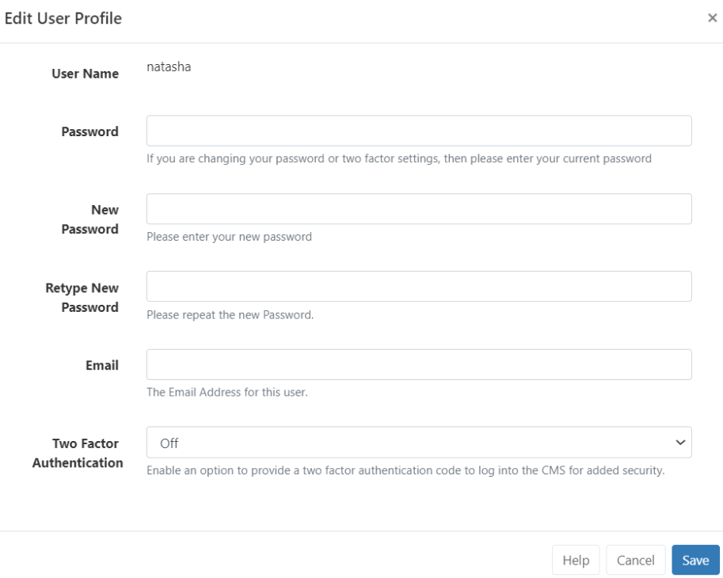
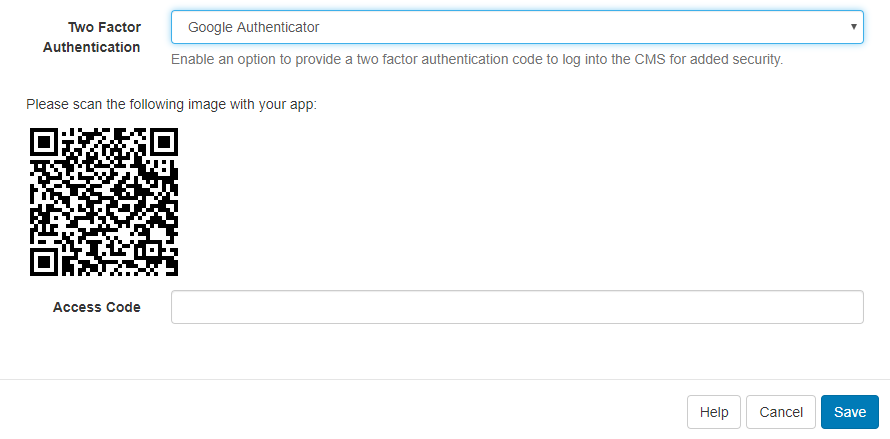

First time User Access
Enter the web address (URL) of your CMS instance. Your Super Administrator will be able to tell you where to go to log in and give you your initial login credentials to access the CMS.
During the CMS installation process, a Username and Password is provided which grants unrestricted access to all areas of the CMS as a Super Administrator User. Administrators have a number of login management options which can be set for Users from CMS Settings.
Login
The CMS is protected by an authentication system, enter your Username and Password and click to login. All pages in the CMS are authenticated and if you are not logged in a login form will appear.
The CMS uses cookies to track whether a User is logged in or not. If you are experiencing trouble logging in you may need to adjust your browser settings for cookies.
Once logged in you will see your User Dashboard, which serves as your homepage.
The Dashboard and main menu items are based on the enabled Features you have been given within the system!
We recommend that Users change their password after first time log in from the Edit Profile section of the User Profile.
User Profile
Located in the top right of the CMS, click on the icon to manage your User Profile settings, reshow the short ‘Welcome’ tour of the CMS to assist with navigation and functionality, and securely Logout of the CMS after each User session:

The CMS time and timezone which has been set in the Regional CMS Settings are shown here!
Preferences
Preferences can be set which will only be enabled for the logged in User.
The list of options may differ from what is shown below as they are dependent on the Feature access enabled for each User.
Use the available options to enhance your User role within the CMS:

If you make changes to the Navigational Menu positioning for your CMS, ensure you refresh your browser to apply the change!
Edit Profile
We strongly recommend that all Users change their initial password after first login. You may have also been prompted by the system to change your password from User Settings applied by your Administrator.
- Click on Edit Profile to open:

You may have to adhere to a Password Policy, as set by your Administrator when attempting to change your password. A text prompt will be shown to explain what is needed (minimum number of characters etc.) in order to meet the requirements of the set policy.
If you have a Forgotten your Password reset link on the Login page, ensure that your correct Email address is entered in your User Profile. Once clicked a Password Reset Notification will be sent to your email address with further instructions to ensure you quickly regain access to the CMS.
Two Factor Authentication
Users can configure Two Factor Authentication options for Email or Google Authentication to complete login by entering a code to further confirm the identify of who is logging into the CMS.
- Select Email
- Ensure that an Email address has been provided on the User Profile form and click to Save.
Once enabled, on each login after entering the Username and Password you will be asked to provide the 6 digit code shown in the email sent to the provided email address to complete log in.
Google Authenticator
- Install the Google Authenticator app to your mobile device.
- Select Google Authenticator.
- Scan the QR code shown on the Edit User Profile form and enter the code displayed into the Access Code field and Save to complete the set up.

Once enabled, after entering the Username and Password you will be asked to provide the 6 digit code displayed in the Google Authenticator app to complete log in each time.
Ensure that your phone and server have the correct time and date to avoid errors. You will need to enter your password to verify any changes made to the Two Factor Authentication options.
Generate Recovery Codes
On saving a Two Factor Authentication option you will now need to generate recovery codes to be used if access to the configured email address or Google Authenticator app is lost.
- Click on Generate.
- Copy the codes and store them in a safe place like Password Manager.
- Click Save to make the codes active.
If you need to view the generated codes at anytime, click on Show.
If you have no access to the email or app and cannot retrieve recovery codes, please contact your Administrator to Reset Two Factor Authentication!
My Applications
Applications that a User has authorised to act on their behalf within the CMS can be viewed here. Any questions regarding Applications please speak with your Administrator.
At the current time the CMS does not provide individual Users with a method of revoking access to an application. Please speak with your Administrator to request removal of an Application.